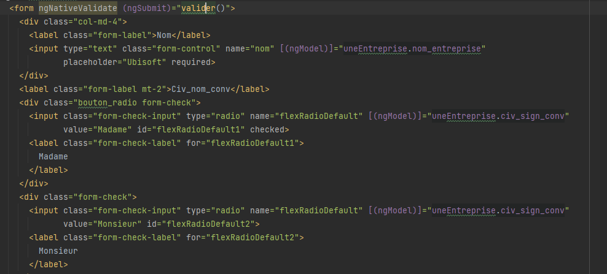
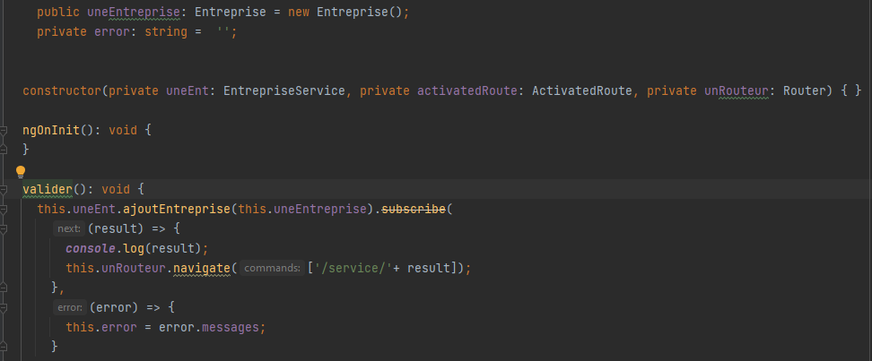
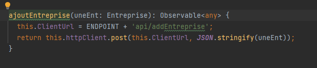

Pour commencer nous avons pris connaissance du projet (Éditeur de convention de stage). Puis lors de la
première semaine nous avons commencé à réaliser la base de données. En fin de semaine nous avons trouvé
un outil en ligne pour utiliser la méthode scrum. en savoir plus
Réunion visio :
Lors de nos semaines de stage nous faisions en moyen une réunion par semaine. Nous planifions le renuions sur googlé meet afin de suivre la bonne avancée du projet
Durant la deuxième semaine nous avons terminé et validé la base de données, ainsi que réaliser toutes la scrum board. Nous avons mis en place l’espace de travail avec l’outil de versioning git hub. Donc mis en place le squelette laravel (l’api) puis le squelette angular (application web). Nous avons pu mettre en place ses squelettes grace au cours sur git que nous avions eu durant le début d'année. Les applications ont été générées avant d'être mise sur github.
Nous sommes enfin rentrés dans la partie développement, nous avons réalisé l’authentification, l’ajout d’une entreprise, l’ajout d’un utilisateur et le commencement de l’ajout d’un responsable. L'ensemble de ses services on été créés sur Laravel puis testé avec Postman.
Quatrième semaine j'ai commencé la partie front sur Angular après avoir testé l'API sur Postman. J'ai commencé par faire l'authentification puis j'ai réfléchi à comment faire pour ajouter tous les champs nécessaires pour créer une convention. Nous en avons parlé puis nous choisis de faire un bouton "Créer convention" qui suivrait tous les formulaires dans l'ordre afin de générer la convention à la fin.
Je n'ai pas pu travailler car j'étais en arrêt-maladie.
Sixième semaine j'ai récupéré ou j'en étais. J'ai donc fais en sorte de passer chacun id dans la barre des tâches pour qu'à la fin des formulaires on puisse générer la convention.
Context :
Lors de mon stage de deuxième année que j'ai réalisé avec deux collègues de classe nous avons dû trouver une méthode de travail pour qu'on avance tous sur un projet commun. Pour cela nous avons choisi un outil de gestion de versions décentralisé (git).
Travail réalisé :
Technologie utilisé :
Bilan :
J'ai donc installez-le composer pour pouvoir générer l'application Laravel puis j'ai
créé l'application Angular.
Voici l'historique sur github :
Génération du projet laravel :
Context :
Lors de cette deuxième situation professionnelle j'ai appelé les services du coté de laravel depuis angular tout en passant les données récoltées dans le formulaire. Pour cela je me servais des services créés dans l'api par mon collègue.
Technologie utilisé :
Bilan :
Je passais les données depuis angular en flux Json.
Mais pour être sûr que tous les services laravel
fonctionnaient bien je vérifiais via postman si le retour du flux json était celui que je voulais.
Formulaire côté angular :
Récupération des données lors de la validation du formulaire :
Appel de l'api depuis angular :
